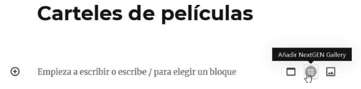

Vamos a instalar, configurar y utilizar el gestor de contenidos Wordpress.
Herramienta: Wordpress
Requisitos previos
Tareas a realizar
Realiza la instalación local de Wordpress en XAMPP siguiendo la guía disponible en Aules.
Realiza un documento Word con los pasos realizados, analizando la instalación local de WordPress en XAMPP justificando cada ajuste (base de datos, usuario, permisos).
Una vez instalado, realiza las siguientes tareas de configuración y creación de contenidos.
1.1). Accede al panel de administración de Wordpress y crea varios usuarios con diferentes roles (administrador, editor, autor, colaborador, suscriptor) .
1.2) Activa el tema "Twenty Sixteen" (plantilla).
Si no lo tienes, instálalo.
Menú: Apariencia
1.3) Personaliza el sitio con los siguientes datos:
Menú: Apariencia > Personalizar
#b722112.1) Crea una página con título "Dragon Ball" y copia como contenido el texto del fichero "Pag Principal.txt".
2.2) En contenido, deberán estar en negrita los textos "Goku", "Toei Animation" y "Fuji Television".
2.3) En contenido, añadir como hiperenlace en el texto Dragon Ball GT la URL "https://es.wikipedia.org/wiki/Dragon_Ball_GT" y que se abra en una nueva ventana.
2.4) En contenido, y por encima del texto, debe aparecer la imagen "logo_ppal.png".
3.1) La web debe abrirse con la página estática con título "Dragon Ball".
Menú: Ajustes > Lectura
3.2) El número máximo de entradas del blog a mostrar en la lista debe ser 2.
Menú: Ajustes > Lectura
3.3) Poner los enlaces permanentes con la estructura "Nombre de la entrada".
Menú: Ajustes > Enlaces permanentes
4.1) Crea las categorías necesarias. "Historia", "Películas" y "Personajes".
Menú: Entradas > Categorías
5.1) Crearemos una serie de entradas en la categoría Historia, obteniendo el contenido de los ficheros .TXT que tienen el nombre igual al título de la entrada (están dentro del directorio historia).
Menú: Entradas > Añadir nueva
Ten en cuenta que, en todas las entradas, la palabra Dragon Ball debe aparecer en cursiva.
Las entradas deben visualizarse en el orden en que se muestran a continuación:
6.1) Crearemos una serie de entradas en la categoría Películas, obteniendo el contenido de los ficheros .TXT que tienen el nombre igual al título de la entrada (están dentro del directorio peliculas).
Ten en cuenta que, en todas las entradas, los títulos de las películas deben aparecer en negrita.
Los títulos de las entradas son:
7.1) Crearemos una serie de entradas en la categoría Personajes, obteniendo el contenido de los ficheros .TXT que tienen el nombre igual al título de la entrada (están dentro del directorio personajes).
Los títulos de las entradas son:
<!--more--> en el lugar adecuado.<!--more--> en el lugar adecuado.8.1) Instala el plugin NextGEN Gallery.
Una vez instalado, tendremos una nueva opción de menú en la zona de configuración denominada Gallery.
Menú: Plugins > Añadir nuevo (instalación)
8.2) Accede a esta nueva opción de menú Gallery y crea una galería que se denomine “Carteles de películas”, y que contenga las siete imágenes llamadas cartel_N.jpg.
Menú: Gallery > Agregar Galería / Imágenes
8.3) Crea una nueva página llamada Carteles de películas que contenga la galería NextGEN.

9.1) Crea un menú que contenga las opciones:
Menú: Apariencia > Menús
Las entradas de cada categoría deben visualizarse en formato blog, en el orden en que se han nombrado en sus apartados correspondientes (5, 6 y 7).
Las siguientes zonas con widgets se mostrarán en todas las páginas.
Menú: Apariencia > Widgets
10.1) En la zona de Barra lateral, coloca los siguientes widgets en el orden indicado:
10.2) En la zona de Contenido inferior 1, coloca los siguientes widgets:
10.3) En la zona de Contenido inferior 2, coloca los siguientes widgets:
11.1 Instalación del foro
11.2 Creación del foro
11.3 Configuración de acceso y permisos
Menú: Plugins > Añadir nuevo
Escribe Duplicator, instálalo y actívalo.
Por último, instalaremos el plugin Duplicator para exportar el sitio web WordPress a un archivo.
Menú: Duplicator > Crear nuevo > Siguiente > Crear
Cuando finalice, haz clic en Descargar con un clic.
Se descargarán dos archivos. Crea una carpeta en tu PC con tu nombre completo y guarda ambos archivos dentro de esa carpeta.
Añade el documento Word realizado en la actividad dentro de la carpeta creada con tu nombre.
Haz clic con el botón derecho encima de la carpeta y selecciona la opción Comprimir en formato ZIP.
Entrega en Aules o en las subidas del servidor FTP del aula (si Aules no te permite subirlo por ser demasiado grande).
| Criterio RA1 | Excelente (9-10) | Notable (7-8) | Bien (5-6) | No logrado (0-4) |
|---|---|---|---|---|
| a) Identifica los requerimientos necesarios para instalar gestores de contenidos. | Analiza la instalación local de WordPress en XAMPP justificando cada ajuste (base de datos, usuario, permisos). | Reconoce y aplica correctamente los pasos de instalación y configuración del CMS. | Identifica los elementos básicos necesarios para la instalación. | Muestra dificultad para identificar o configurar los requisitos mínimos. |
| b) Gestiona usuarios con roles diferentes. | Crea todos los usuarios asignando roles adecuados administrador, editor, autor, colaborador, suscriptor. | Crea algunos usuarios asignando roles adecuados. | Crea un único usuario con rol correcto. | No crea roles diferenciados o los asigna de forma incorrecta. |
| c) Personaliza la interfaz del gestor de contenidos. | Adapta la plantilla y los colores a un estilo coherente con el tema “Dragon Ball”, incluyendo imagen recortada correctamente. | Aplica los cambios requeridos de título, descripción, color y cabecera. | Realiza parcialmente los ajustes estéticos solicitados. | Aplica el tema sin personalización. |
| d) Realiza pruebas de funcionamiento (interfaz). | Comprueba diseño responsive y corrige errores de visualización. | Revisa la navegación general y coherencia entre menús y páginas. | Verifica funcionamiento básico del sitio. | No comprueba ni corrige errores visuales. |
| e) Realiza tareas de actualización del gestor (seguridad). | Realiza y documenta actualizaciones de Wordpress y plugins, explicando las medidas de seguridad previas | Realiza actualizaciones de Wordpress y plugins | Realiza alguna parte de las actualizaciones | No realiza actualizaciones o lo hace de forma incompleta. |
| f) Instala y configura los módulos y menús necesarios. | Instala, configura y personaliza correctamente plugins (NextGEN, Duplicator) y estructura menús funcionales. | Instala los plugins y crea menús completos con submenús correctos. | Crea menús con errores menores de vinculación o plugins mal configurados. | No instala los módulos o los menús no funcionan. |
| g) Activa y configura mecanismos de seguridad. | Realiza copia de seguridad con Duplicator, y documenta el proceso. | Genera y descarga correctamente los archivos de backup. | Ejecuta la copia. | No realiza copia o lo hace de forma incompleta. |
| h) Habilita foros y establece reglas de acceso. | Instala y configura correctamente el foro “Comunidad Dragon Ball”, creando subforos temáticos, estableciendo roles y reglas de acceso. Verifica su funcionamiento con diferentes usuarios. | Crea el foro y sus subforos principales, configurando accesos y normas básicas de participación. | Instala el foro y permite publicar mensajes, pero sin configurar adecuadamente los permisos o reglas. | No instala el foro, o lo hace sin permitir interacción ni reglas definidas. |
| i) Realiza pruebas de funcionamiento (módulos). (Galería y Widgets) | Evalúa la funcionalidad del plugin NextGEN y la correcta inserción de la galería y los widgets en todas las zonas. | Comprueba funcionamiento de la galería, menús y widgets. | Inserta elementos visuales sin comprobar interactividad. | Los módulos no funcionan o faltan elementos. |
| j) Realiza copias de seguridad de los contenidos del gestor. | Realiza la copia y prueba la restauración con Duplicator. | Genera y entrega correctamente la copia | Ejecuta la copia sin realizar bien la entrega ni probar su recuperación. | No realiza copia o la entrega incompleta. |
Vamos a crear una cuenta gratuita en el hosting CDMON e instalar el gestor de contenidos Wordpress.
Herramienta: CDMON y Wordpress
Página oficial CDMON: CDMON
Página oficial Wordpress: Wordpress.org
Requisitos previos
Tener una cuenta de correo electrónico válida.
Tareas a realizar
Realiza la creación de una cuenta gratuita en CDMON y una plataforma de pruebas en Hosting.
Realiza un documento Word con los pasos realizados, analizando la creación de la cuenta gratuita en CDMON y la instalación de Wordpress en el hosting gratuito, justificando cada ajuste (base de datos, usuario, permisos).
Indica en el documento para que sirve cada usuario:
Teniendo esto en cuenta, ¿sabrías restaurar una copia de seguridad de Wordpress en este hosting gratuito?
PASOS A REALIZAR: